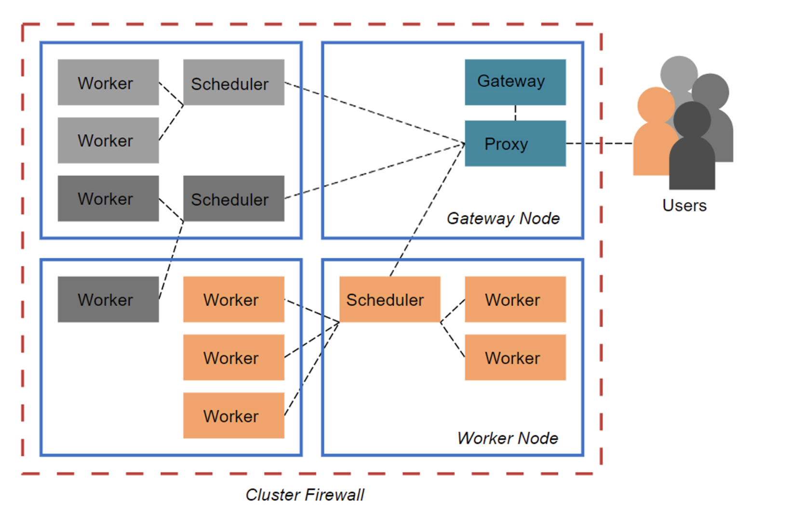

Dask#
What is Dask? Dask is a distributed system which can scale efficiently from a single computer to hundreds of servers. Dask uses regular Python code and Python APIs to scale the work for existing python structures (like NumPy arrays and Pandas dataframes) concurrently.
Why should we scale? Computations are much faster when data can be held in local memory. Most computers do not have massive memory storages to store big data, those that do are extremely expensive. An easier and cost effective method is to use the pool of memory from a collections of systems to store large datasets.
Dask Gateway The GeoAnalytics Canada Platform uses Dask Gateway to provide our users a secure multi-tenant server for managing Dask clusters. Our administrators manage the backend configuration of the clusters, so user’s can connect to the Dask Gateway without hassle.
Here’s a diagram representing the Dask architecture, which consists of the Dask Clusters, a proxy for connecting the user’s client with the scheduler, and the main Gateway for authentication and cluster management.

1.0 Connecting to Dask-Gateway#
To connect to the Dask Gateway server through Jupyterhub, a session must be activated by creating a Gateway client.
The address and authentication method to use are already configured within this notebook environment, therefore, we can initialize the gateway object without any parameters.
[ ]:
from dask_gateway import Gateway
gateway = Gateway()
gateway
If you want to connect to a Dask Gateway server outside of this environment, then the full address of the dask-gateway server and the authentication method to use must be provided.
Such as this line of code: gateway = Gateway("http://traefik-dask-gateway.geoanalytics.ca/services/dask-gateway/", auth="jupyterhub")
2.0 Creating a new cluster#
gateway.new_cluster() will create a new cluster, but without any workers assigned.
[2]:
cluster = gateway.new_cluster()
cluster
NOTE: The Dask extension on the left side bar provides a method to create a new cluster, do not create a cluster directly from this extension.
3.0 Configuring a cluster#
The gateway.clusters_options() function shows the options for configuring the clusters. The options include the number of worker cores you can specify, the memory for the workers, and the Docker Image to use.
For the Docker Image to work with Dask-Gateway, it must have a compatible version of Dask-Gateway installed (we recommend always using the same version as deployed on the dask-gateway-server). It’s also recommended to use an ‘init’ process in your images, becuase running without it may lead to odd worker behaviors. Any “init” process will work, but we do suggest “tini”. There are no other requirements for images, any image that meets the above should work fine. You may install any additional libraries or dependencies you require.
If you wish to read up on “tini”, here is a links:
[3]:
options = gateway.cluster_options()
options
[4]:
cluster
Let’s assign the default options as the configuration for a new cluster. The default core and RAM values are 10GB. These worker resources cannot be adjusted. GeoAnalytics’ administrators have controlled the worker resources for optimal use.
[ ]:
cluster2 = gateway.new_cluster(options)
cluster2
4.0 Scaling the Clusters#
There are two types of ways to scale up a cluster:
1. Manual Scale
The .scale(N) method can be used to scale the workers in a cluster by specifying the number of workers wanted in place of N.
Here, we scale up to two workers, and you can see in the resulting Gateway cluster, the workers, cores, and memory have increased by two-times the default values since there are two workers available.
[5]:
cluster.scale(2)
cluster
2. Adaptive scaling
Another way to scale is by allowing the cluster to scale based on the load, adaptively. This reduces the amount of resources to only what is required. The .adapt(minimum=<min number>, maximum=<max number>) function takes in two parameters that sets the bounds for the minimum and maximum number of workers allowed.
[6]:
# Adaptively scale between 2 and 10 workers
cluster.adapt(minimum=5, maximum=10)
cluster
5.0 Connecting to the cluster#
To start working and putting the cluster to use, you will need to create a client specific to the cluster using the .get_client() method which will return a dask.distributed.Client object containing information about the cluster, and url to the dask dashboard and scheduler.
[7]:
client = cluster.get_client()
client
[7]:
Client
Client-a211cb7c-ee54-11ec-83c1-86e3fdb18386
| Connection method: Cluster object | Cluster type: dask_gateway.GatewayCluster |
| Dashboard: http://traefik-dask-gateway.geoanalytics.ca/services/dask-gateway/clusters/pangeo.2f33c631382a4fac92ac25d933eb14a0/status |
Cluster Info
GatewayCluster
- Name: pangeo.2f33c631382a4fac92ac25d933eb14a0
- Dashboard: http://traefik-dask-gateway.geoanalytics.ca/services/dask-gateway/clusters/pangeo.2f33c631382a4fac92ac25d933eb14a0/status
The URL above will take you to the cluster’s dashboard. The cluster’s dashboard is where you can visualize how your computation is being distributed among your workers. You can find a link to learn more about the Dask Dashboard at the end of this notebook.
6.0 Shutting down the cluster#
After you are done your work with the clusters, shut the clusters down using the .shutdown() method which closes all dask workers, scheduler, and the connection to the Client.
Important Note: Remember to ALWAYS shut down the cluster before closing your Jupyter server and disconnecting from GeoAnalytics!
[ ]:
cluster.shutdown()
cluster2.shutdown()
7.0 Additional Information#
The Dask dashboard offers multiple visualizations to diagnose the performance of the distributed computation.
A brief overview of some of the Visualizations:
Dask Task Stream: activity of every core across a cluster over time.
Dask Progress: shows the progress of every separate task
Dask Profile: explains the profile of the code at a “finer granularity.”
Dask System Plots: gives information about the processes being run by the scheduler.
Dask Graph: shows active tasks as the nodes with edges between dependent tasks.
Dask Workers: gives all the information about the workers in the cluster.
Here are a few sources if you would like explore Dask further:
Dask Gateway : https://gateway.dask.org
Video walkthrough of Dask Dashboard: https://www.youtube.com/watch?v=N_GqzcuGLCY